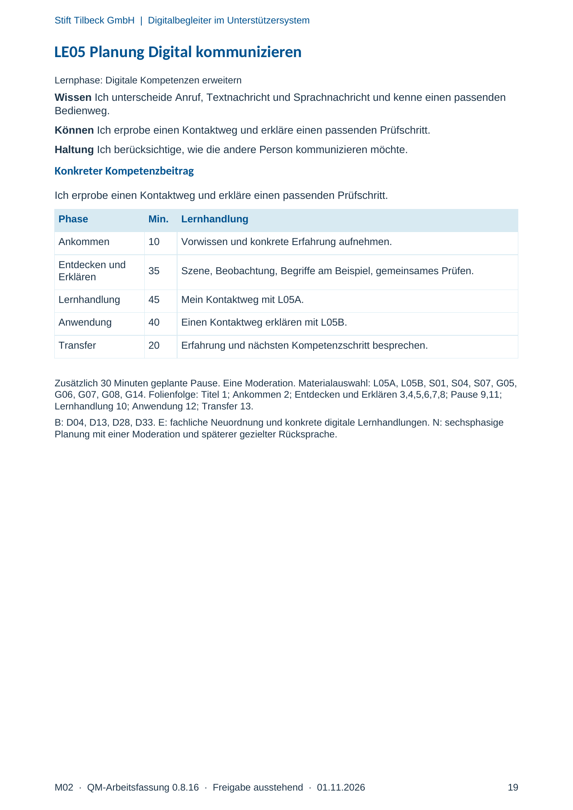
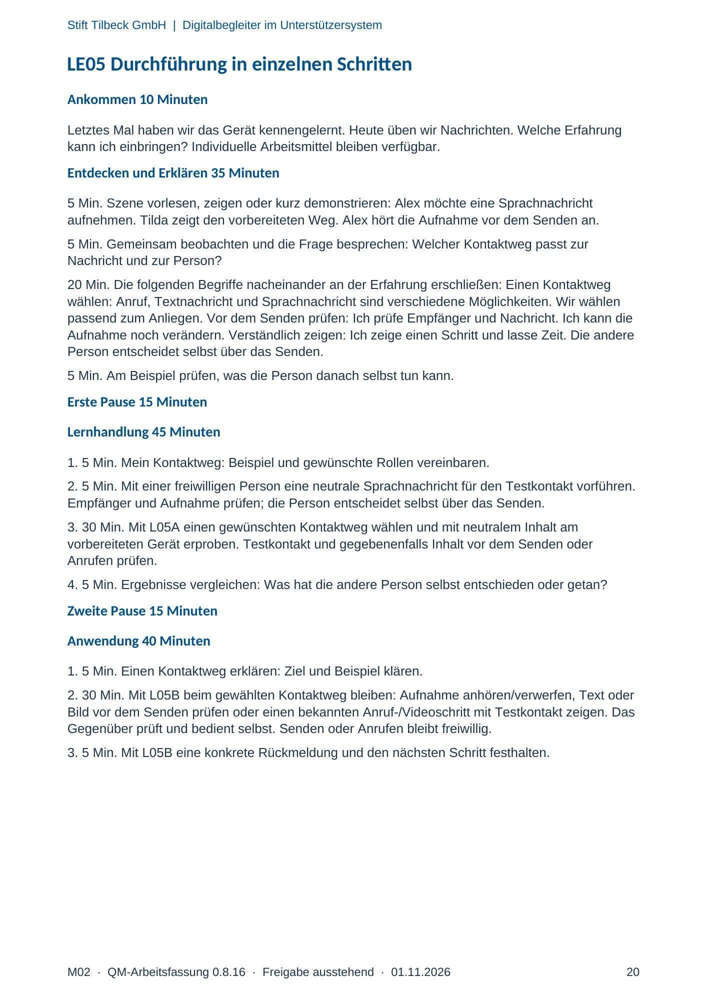
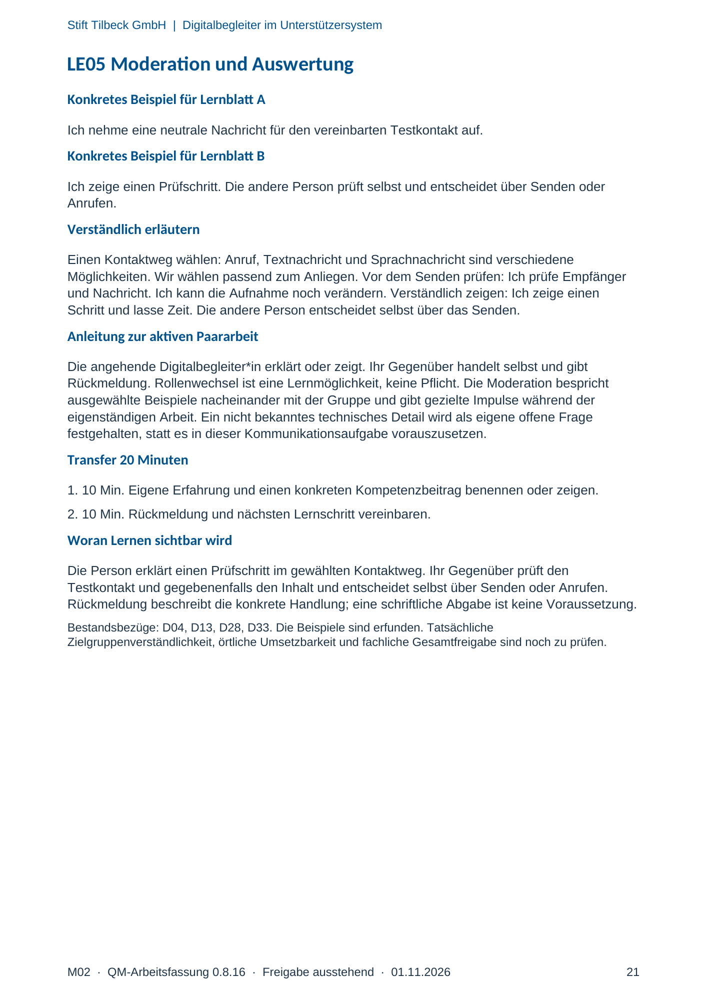

M02 · Originalseite 19, 20, 21
Handbuch und Muster
Gezielte Original-Druckauswahl.
Fragen und Ankreuzfelder werden auf dem Ausdruck bearbeitet. Die Lesefassung speichert keine Antworten.
Lesefassung · Seite 19
Stift Tilbeck GmbH | Digitalbegleiter im Unterstützersystem
M02 · QM-Arbeitsfassung 0.8.16 · Freigabe ausstehend · 01.11.2026 19
LE05 Planung Digital kommunizieren
Lernphase: Digitale Kompetenzen erweitern
Wissen Ich unterscheide Anruf, Textnachricht und Sprachnachricht und kenne einen passenden
Bedienweg.
Können Ich erprobe einen Kontaktweg und erkläre einen passenden Prüfschritt.
Haltung Ich berücksichtige, wie die andere Person kommunizieren möchte.
Konkreter Kompetenzbeitrag
Ich erprobe einen Kontaktweg und erkläre einen passenden Prüfschritt.
Phase Min. Lernhandlung
Ankommen 10 Vorwissen und konkrete Erfahrung aufnehmen.
Entdecken und
Erklären 35 Szene, Beobachtung, Begriffe am Beispiel, gemeinsames Prüfen.
Lernhandlung 45 Mein Kontaktweg mit L05A.
Anwendung 40 Einen Kontaktweg erklären mit L05B.
Transfer 20 Erfahrung und nächsten Kompetenzschritt besprechen.
Zusätzlich 30 Minuten geplante Pause. Eine Moderation. Materialauswahl: L05A, L05B, S01, S04, S07, G05,
G06, G07, G08, G14. Folienfolge: Titel 1; Ankommen 2; Entdecken und Erklären 3,4,5,6,7,8; Pause 9,11;
Lernhandlung 10; Anwendung 12; Transfer 13.
B: D04, D13, D28, D33. E: fachliche Neuordnung und konkrete digitale Lernhandlungen. N: sechsphasige
Planung mit einer Moderation und späterer gezielter Rücksprache.
Originalseite ansehen

Lesefassung · Seite 20
Stift Tilbeck GmbH | Digitalbegleiter im Unterstützersystem
M02 · QM-Arbeitsfassung 0.8.16 · Freigabe ausstehend · 01.11.2026 20
LE05 Durchführung in einzelnen Schritten
Ankommen 10 Minuten
Letztes Mal haben wir das Gerät kennengelernt. Heute üben wir Nachrichten. Welche Erfahrung
kann ich einbringen? Individuelle Arbeitsmittel bleiben verfügbar.
Entdecken und Erklären 35 Minuten
5 Min. Szene vorlesen, zeigen oder kurz demonstrieren: Alex möchte eine Sprachnachricht
aufnehmen. Tilda zeigt den vorbereiteten Weg. Alex hört die Aufnahme vor dem Senden an.
5 Min. Gemeinsam beobachten und die Frage besprechen: Welcher Kontaktweg passt zur
Nachricht und zur Person?
20 Min. Die folgenden Begriffe nacheinander an der Erfahrung erschließen: Einen Kontaktweg
wählen: Anruf, Textnachricht und Sprachnachricht sind verschiedene Möglichkeiten. Wir wählen
passend zum Anliegen. Vor dem Senden prüfen: Ich prüfe Empfänger und Nachricht. Ich kann die
Aufnahme noch verändern. Verständlich zeigen: Ich zeige einen Schritt und lasse Zeit. Die andere
Person entscheidet selbst über das Senden.
5 Min. Am Beispiel prüfen, was die Person danach selbst tun kann.
Erste Pause 15 Minuten
Lernhandlung 45 Minuten
1. 5 Min. Mein Kontaktweg: Beispiel und gewünschte Rollen vereinbaren.
2. 5 Min. Mit einer freiwilligen Person eine neutrale Sprachnachricht für den Testkontakt vorführen.
Empfänger und Aufnahme prüfen; die Person entscheidet selbst über das Senden.
3. 30 Min. Mit L05A einen gewünschten Kontaktweg wählen und mit neutralem Inhalt am
vorbereiteten Gerät erproben. Testkontakt und gegebenenfalls Inhalt vor dem Senden oder
Anrufen prüfen.
4. 5 Min. Ergebnisse vergleichen: Was hat die andere Person selbst entschieden oder getan?
Zweite Pause 15 Minuten
Anwendung 40 Minuten
1. 5 Min. Einen Kontaktweg erklären: Ziel und Beispiel klären.
2. 30 Min. Mit L05B beim gewählten Kontaktweg bleiben: Aufnahme anhören/verwerfen, Text oder
Bild vor dem Senden prüfen oder einen bekannten Anruf-/Videoschritt mit Testkontakt zeigen. Das
Gegenüber prüft und bedient selbst. Senden oder Anrufen bleibt freiwillig.
3. 5 Min. Mit L05B eine konkrete Rückmeldung und den nächsten Schritt festhalten.
Originalseite ansehen

Lesefassung · Seite 21
Stift Tilbeck GmbH | Digitalbegleiter im Unterstützersystem
M02 · QM-Arbeitsfassung 0.8.16 · Freigabe ausstehend · 01.11.2026 21
LE05 Moderation und Auswertung
Konkretes Beispiel für Lernblatt A
Ich nehme eine neutrale Nachricht für den vereinbarten Testkontakt auf.
Konkretes Beispiel für Lernblatt B
Ich zeige einen Prüfschritt. Die andere Person prüft selbst und entscheidet über Senden oder
Anrufen.
Verständlich erläutern
Einen Kontaktweg wählen: Anruf, Textnachricht und Sprachnachricht sind verschiedene
Möglichkeiten. Wir wählen passend zum Anliegen. Vor dem Senden prüfen: Ich prüfe Empfänger
und Nachricht. Ich kann die Aufnahme noch verändern. Verständlich zeigen: Ich zeige einen
Schritt und lasse Zeit. Die andere Person entscheidet selbst über das Senden.
Anleitung zur aktiven Paararbeit
Die angehende Digitalbegleiter*in erklärt oder zeigt. Ihr Gegenüber handelt selbst und gibt
Rückmeldung. Rollenwechsel ist eine Lernmöglichkeit, keine Pflicht. Die Moderation bespricht
ausgewählte Beispiele nacheinander mit der Gruppe und gibt gezielte Impulse während der
eigenständigen Arbeit. Ein nicht bekanntes technisches Detail wird als eigene offene Frage
festgehalten, statt es in dieser Kommunikationsaufgabe vorauszusetzen.
Transfer 20 Minuten
1. 10 Min. Eigene Erfahrung und einen konkreten Kompetenzbeitrag benennen oder zeigen.
2. 10 Min. Rückmeldung und nächsten Lernschritt vereinbaren.
Woran Lernen sichtbar wird
Die Person erklärt einen Prüfschritt im gewählten Kontaktweg. Ihr Gegenüber prüft den
Testkontakt und gegebenenfalls den Inhalt und entscheidet selbst über Senden oder Anrufen.
Rückmeldung beschreibt die konkrete Handlung; eine schriftliche Abgabe ist keine Voraussetzung.
Bestandsbezüge: D04, D13, D28, D33. Die Beispiele sind erfunden. Tatsächliche
Zielgruppenverständlichkeit, örtliche Umsetzbarkeit und fachliche Gesamtfreigabe sind noch zu prüfen.
Originalseite ansehen
